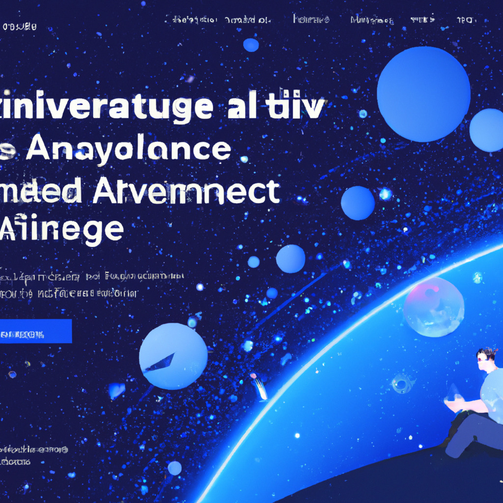

As technology continues to evolve, the line between reality and virtual worlds becomes increasingly blurred. The notion that our universe might be a sophisticated simulation has captivated the minds of both scientists and the general public. But what if there is another possibility? What if our reality is not just a simulation, but rather an advanced Integrated Development Environment (IDE)?
The idea that we may be living in a simulated universe is not new. In 2003, philosopher Nick Bostrom proposed the Simulation Hypothesis, suggesting that our reality could be an artificial construct created by a highly advanced civilization. This concept has been the subject of numerous debates and discussions, with some prominent figures like Elon Musk asserting that the likelihood of us living in a base reality is one in billions.
While the Simulation Hypothesis is fascinating, another intriguing possibility has recently emerged: that our universe is not just a simulation, but an Integrated Development Environment. In this scenario, our reality serves as an advanced platform for creating and testing new ideas, concepts, and simulations.
An IDE is a software application that provides programmers with a comprehensive set of tools to write, test, and debug code more efficiently. This concept, when applied to the universe, suggests that our reality could be a highly advanced environment for the development and implementation of various simulations and experiments.
Several components of an IDE can be paralleled in our universe. For instance, the laws of physics, which govern the behavior of everything in our world, could be seen as a programming language in which our reality is coded. Similarly, the fundamental constants of nature, such as the speed of light or Planck's constant, can be compared to the predefined libraries in an IDE, providing essential building blocks for creating complex simulations.
If our reality is indeed an IDE, it raises numerous questions and ethical concerns. For instance, who are the programmers or entities responsible for creating and maintaining this environment? What is the purpose of our existence within this IDE, and do we have any control over our destiny?
As we continue to explore the nature of our reality, it is crucial to consider these questions and engage in open, constructive discussions. While the concept of our universe as an IDE may seem far-fetched, it offers an alternative perspective on the nature of existence and prompts us to question our understanding of reality.
As technology progresses and our understanding of the universe deepens, we may eventually gather enough evidence to support or refute the idea of our reality being an advanced IDE. In the meantime, this concept encourages us to think outside the box and pushes the boundaries of scientific inquiry.
Whether our universe is a simulation, an IDE, or something else entirely, the exploration of these ideas helps us develop a deeper understanding of the world around us and our place in it. As we move forward, we must embrace these thought-provoking concepts while keeping our minds open to new possibilities and discoveries.